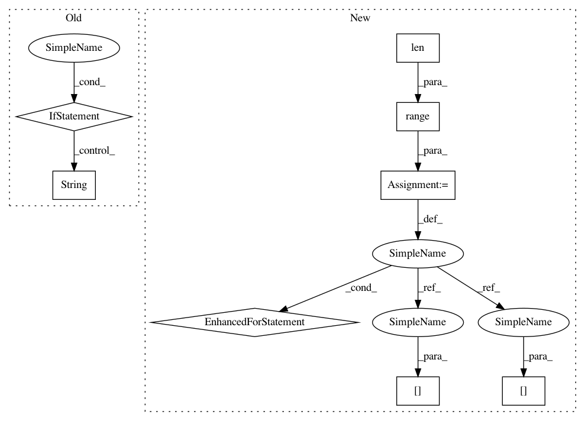

445b159af4367058d1e71282869789342712aa8a,bin/basenji_test.py,,main,#,53
Before Change
target_means_median = np.median(target_means)
target_means /= target_means_median
norm_out = open("%s/normalization.txt" % options.out_dir, "w")
print("\n".join([str(tu) for tu in target_means]), file=norm_out)
norm_out.close()
// clean up
After Change
// target_means /= target_means_median
norm_out = open("%s/normalization.txt" % options.out_dir, "w")
// print("\n".join([str(tu) for tu in target_means]), file=norm_out)
for ti in range(len(target_means)):
print(ti, target_means[ti], target_means_median/target_means[ti], file=norm_out)
norm_out.close()
// clean up
del test_acc
In pattern: SUPERPATTERN
Frequency: 3
Non-data size: 8
Instances
Project Name: calico/basenji
Commit Name: 445b159af4367058d1e71282869789342712aa8a
Time: 2019-04-12
Author: drk@calicolabs.com
File Name: bin/basenji_test.py
Class Name:
Method Name: main
Project Name: calico/basenji
Commit Name: d6cfffd01a2a3129739c6e76f9d966287b20b7c5
Time: 2019-04-12
Author: drk@calicolabs.com
File Name: bin/basenji_predict.py
Class Name:
Method Name: main
Project Name: calico/basenji
Commit Name: 445b159af4367058d1e71282869789342712aa8a
Time: 2019-04-12
Author: drk@calicolabs.com
File Name: bin/basenji_test.py
Class Name:
Method Name: main
Project Name: QUANTAXIS/QUANTAXIS
Commit Name: 3c857b194b02141ea0fb79a178c4229433430354
Time: 2017-05-08
Author: yutiansut@qq.com
File Name: QUANTAXIS/QAFetch/QATushare.py
Class Name:
Method Name: QA_fetch_get_stock_info